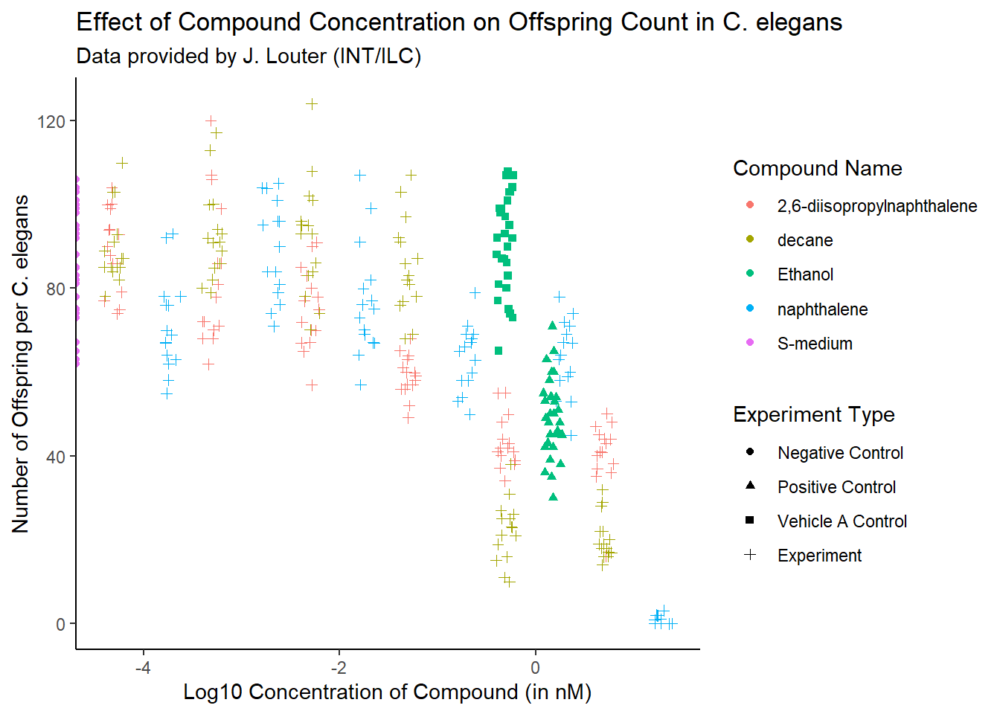

C. elegans Plate Experiment
Introduction
The data presented in this document was kindly provided by J. Louter (INT/ILC) and stems from an experiment that investigated the effect of various compounds on C. elegans nematodes. In this experiment, adult C. elegans were exposed to different concentrations of compounds, and the number of offspring produced by each nematode was counted. The key variables in this dataset include:
- RawData: The number of offspring counted (the outcome).
- compName: The name of the compound or chemical used in the experiment.
- compConcentration: The concentration of the compound (in nM).
- expType: The type of experimental condition (e.g., positive control, negative control, vehicle A control, experiment).
Set up
Importing the data
The first step is to import the data from the provided Excel file, which contains the results of the experiment.
Inspecting the data types
Next, we inspect the structure of the data to ensure it has been imported correctly. We also check for the data types of key columns.
## [1] "numeric"## [1] "character"## [1] "character"## [1] "character"# Check if data is correctly imported.
plate_experiment_data %>%
dplyr::select(RawData, compName, compConcentration, expType) ## # A tibble: 360 × 4
## RawData compName compConcentration expType
## <dbl> <chr> <chr> <chr>
## 1 44 2,6-diisopropylnaphthalene 4.99 experiment
## 2 37 2,6-diisopropylnaphthalene 4.99 experiment
## 3 45 2,6-diisopropylnaphthalene 4.99 experiment
## 4 47 2,6-diisopropylnaphthalene 4.99 experiment
## 5 41 2,6-diisopropylnaphthalene 4.99 experiment
## 6 35 2,6-diisopropylnaphthalene 4.99 experiment
## 7 41 2,6-diisopropylnaphthalene 4.99 experiment
## 8 36 2,6-diisopropylnaphthalene 4.99 experiment
## 9 40 2,6-diisopropylnaphthalene 4.99 experiment
## 10 38 2,6-diisopropylnaphthalene 4.99 experiment
## # ℹ 350 more rowsplate_experiment_tidydata <- plate_experiment_data
plate_experiment_tidydata$compConcentration <-
as.numeric(plate_experiment_tidydata$compConcentration)There is a small issue with the compConcentration column where a comma (,) was mistakenly used instead of a period (.), resulting in NA values. We correct this by replacing the comma with a period and ensuring all values are numeric.
# Locate the NA value in the compConcentration column.
character_placement <- which(is.na(plate_experiment_tidydata$compConcentration))
# Convert the character value to numeric, handling commas.
character_value <- plate_experiment_data$compConcentration[character_placement] %>%
str_replace(",", ".") %>% parse_number()
# Update the compConcentration column
plate_experiment_tidydata$compConcentration[character_placement] <- character_value
# Check the class of compConcentration after conversion.
print(class(plate_experiment_tidydata$compConcentration))## [1] "numeric"## [1] 0Scatterplot of C. elegans plate experiment
To visualize the effect of compound concentration on offspring count, a scatterplot was created. The x-axis represents the log-transformed concentration of the compound (in nM), and the y-axis represents the raw number of offspring. The points are color-coded by the compound name and shaped by the experimental condition type.
plate_experiment_tidydata %>% ggplot(aes(x = log10(compConcentration), y = RawData,
color = compName, shape = expType)) +
geom_jitter(width = 0.1, height = 0.1) +
labs(x = "Log10 Concentration of Compound (in nM)",
y = "Number of Offspring per C. elegans",
color = "Compound Name", shape = "Experiment Type",
title = "Effect of Compound Concentration on Offspring Count in C. elegans",
subtitle = "Data provided by J. Louter (INT/ILC)") +
scale_shape_discrete(labels = c("Negative Control", "Positive Control",
"Vehicle A Control", "Experiment")) +
theme_classic()
Figuur 1. Scatterplot showing the effect of compound concentration on offspring count in C. elegans across different experimental conditions.
The positive control of this experiment is “Ethanol”. The negative control of this experiment is “No treatment”.
Normalizing the data for the negative control
To facilitate comparison across experimental conditions, we normalize the raw offspring counts relative to the negative control group (“S-medium”). This adjustment accounts for baseline variability and enables more accurate comparisons between experimental conditions.
# Compute the mean for the negative control group "S-medium".
mean_controlNegative <- mean(plate_experiment_tidydata$RawData
[plate_experiment_tidydata$compName == "S-medium"],
na.rm = TRUE)
# Create RawData_normalized column with the normalized raw data.
plate_experiment_tidydata$RawData_normalized <-
plate_experiment_tidydata$RawData / mean_controlNegative
# Compute the mean of the normalized data for the negative control group.
mean(plate_experiment_tidydata$RawData
[plate_experiment_tidydata$compName == "S-medium"], na.rm = TRUE)## [1] 85.9Scatterplot of C. elegans plate experiment with normalized data
With the data normalized, we can generate another scatterplot to visualize the relationship between compound concentration and offspring count. This time, the y-axis reflects the normalized number of offspring.
plate_experiment_tidydata %>% ggplot(aes(x = log10(compConcentration),
y = RawData_normalized,
color = compName, shape = expType)) +
geom_jitter(width = 0.1, height = 0.1) +
labs(x = "Log10 Concentration of Compound (in nM)",
y = "Normalized Number of Offspring per C. elegans",
color = "Compound Name", shape = "Experiment Type",
title = "Effect of Compound Concentration on Offspring Count in C. elegans",
subtitle = "Data provided by J. Louter (INT/ILC)") +
scale_shape_discrete(labels = c("Negative Control", "Positive Control",
"Vehicle A Control", "Experiment")) +
theme_classic()
Figuur 2. Scatterplot of the effect of compound concentration on normalized offspring count in C. elegans.
The normalization process makes it easier to compare the effects of different compounds, accounting for baseline differences in offspring count.
Analyzing the C. elegans experiment
Below you can find a stepwise plan to analyze the experiment and determine the effect of different concentrations on offspring count and whether the different compounds have different IC50 curves.
Step 1: Data exploration
- Ensure all data columns are complete and correctly formatted.
- Calculate mean, median, and range of offspring counts (RawData) by compound and concentration.
- Use visualizations and statistical tests to check if the data is normally distributed.
Step 2: Investigating dose-response relationships
- Apply log transformation to compound concentrations for variance stabilization.
- Create scatterplots or smoothed curves to visualize relationships between concentration and offspring counts for each compound.
Step 3: Statistical tests for effects of concentration
- Use ANOVA to test for significant differences in offspring counts across concentrations and compounds.
- If ANOVA is significant, perform post-hoc tests to identify significant differences between groups.
Step 4: Estimation of dose-response curves
- Use the drc package to fit dose-response models and estimate IC50 values for each compound.
- Statistically compare IC50 values across compounds to determine which are more or less potent.
Step 5: Visualizing results
- Plot fitted dose-response curves for all compounds, including confidence intervals, to facilitate comparisons.
- Compile IC50 values and confidence intervals into a clear summary table.
Step 6: Interpretation and conclusions
- Highlight key results, including significant effects of concentrations and differences in IC50 values.
- Discuss the implications of findings for understanding the effects of compounds on C. elegans.